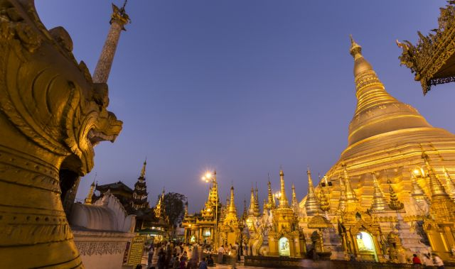

TRAVELLING TO MYANMAR |
About |
Contact |
Credit |
|  |
Myanmar (formerly Burma) is a Southeast Asian nation of more than 100 ethnic groups, bordering India, Bangladesh, China, Laos and Thailand. Yangon (formerly Rangoon), the country's largest city, is home to bustling markets, numerous parks and lakes, and the towering, gilded Shwedagon Pagoda, which contains Buddhist relics and dates to the 6th century. Myanmar is the largest country in Southeast Asia. The country is called the “Golden Land,” as it has many beautiful golden temples, such as Shwedagon Pagoda and other calming spots to experience peace of mind. There are many beaches and Buddhist temples, which make Myanmar an incredibly beautiful country. |
||
| Explore | Group | Follow Us |
|---|---|---|
About |
Aung Bhone Khant |
|
|
Copy right to ©2023, Year 7 HELIO GROUP 2 |
||